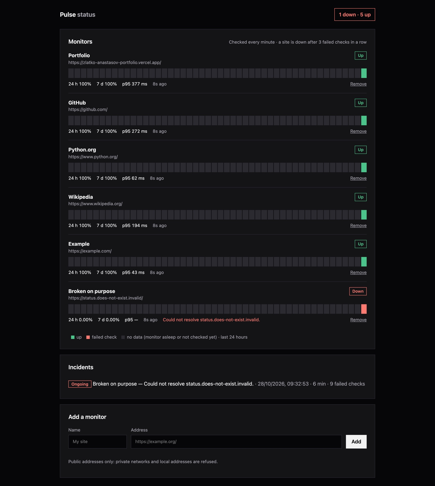
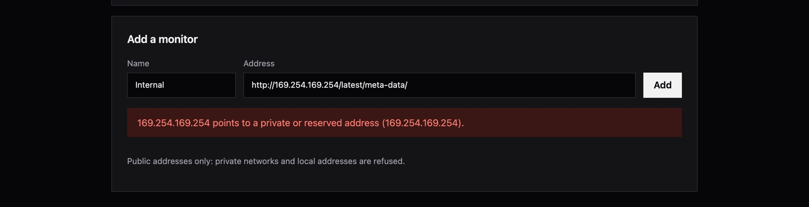

Pulse
PYTHON / FASTAPI — UPTIME MONITORING
An uptime monitor with a public status page. It checks websites every minute, records how fast they answer, opens an incident when one goes down and closes it when it comes back — without false alarms and without becoming a tool for probing private networks.
TRY THE LIVE DEMO ↗ EXPLORE THE SOURCE ↗ API DOCS ↗Every minute. Four steps.
IMPLEMENTED LOOP- 01 / CLAIMFOR UPDATE SKIP LOCKED
Due monitors are claimed in the database, so two running instances never check the same site twice.
- 02 / GUARDSSRF check
The host is resolved before every request; any private or reserved address is refused.
- 03 / PROBEasyncio + httpx
All due sites are checked together, each with its own timeout, under a concurrency limit.
- 04 / DECIDEState machine
Up, degraded or down; an incident opens on the third failure in a row and closes on the first success.
The demo includes a site that is broken on purpose, so there is always an incident to look at.

01 — THE PROBLEM
A monitor is only useful if you can trust its alarms.
Checking whether a website answers is easy. The hard part is everything around it: a site that hangs must not stall the checks of every other site, one slow answer must not page anyone at night, an hour-long outage must be one incident rather than sixty, and a public form that accepts URLs must not let anyone make the server request its own private network.
Pulse is a small monitor built around those cases.
02 — DECISIONS
Every failure has a defined outcome.
- One slow answerThe site is “degraded”, not down. It is down only after three failures in a row, configurable per monitor.
- Long outageStill one incident, with a growing failed-check count. A partial unique index makes a second open incident impossible.
- Hanging siteEach check has its own timeout and all checks run concurrently, so one site can’t delay the others.
- Two instancesSELECT … FOR UPDATE SKIP LOCKED hands each due monitor to exactly one of them.
- Private addresseslocalhost, 10.x, 169.254.169.254 and every other non-public range are refused — again before each request, in case DNS changes later.
- Monitor asleepGaps with no checks are shown as “no data” and left out of uptime, rather than counted as up or down.

03 — PYTHON DESIGN
Async from the socket to the database.
FastAPI serves the API and the status page; the checker runs as a background task in the same process, started from the application’s lifespan. Requests go out through one shared httpx.AsyncClient; asyncio.gather with a semaphore runs them concurrently and asyncio.timeout bounds each one. SQLAlchemy 2 with asyncpg keeps database access non-blocking, and Alembic owns the schema.
The state machine is a plain function that takes a monitor, a result and a time, which keeps it easy to test. Uptime and p95 are computed in PostgreSQL; the 24-hour timeline is built from the raw checks into 48 half-hour buckets.
04 — VERIFIED BEHAVIOR
A fake internet with sites that misbehave.
- One failure is degraded; three in a row open exactly one incident; recovery closes it.
- A success between failures resets the count.
- A hanging site times out while five others are checked in the same round.
- Two checkers running at once check ten monitors exactly ten times.
- Private, reserved and link-local addresses are refused, even when only one of several DNS answers is private.
- The database itself refuses a second open incident for a monitor.
32 pytest tests use httpx.MockTransport as a fake internet and run against a real PostgreSQL, so row locking and the partial index are tested for real. GitHub Actions runs Ruff, the Alembic migrations and the tests on every push.
05 — BOUNDARIES
Say what it does not do.
There is no login and no e-mail alerting; the demo is limited to 25 monitors and keeps eight days of checks. It runs on a free server that sleeps when nobody visits, so checks only run while it is awake and the timeline shows the gaps honestly as “no data”. It deliberately doesn’t monitor the other free demos on the same host, since that would keep them awake permanently.
The project was built with AI-assisted tooling; the design decisions and the failure cases are documented in the repository.
OPEN THE LIVE DEMO ↗ VIEW REPOSITORY ↗